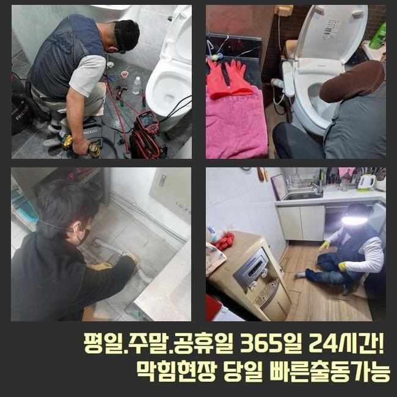
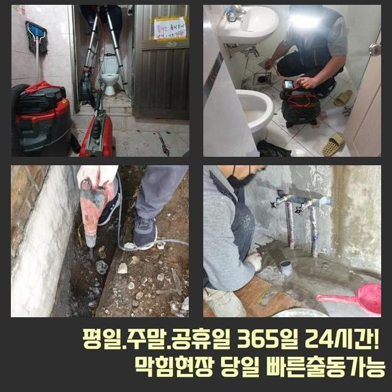
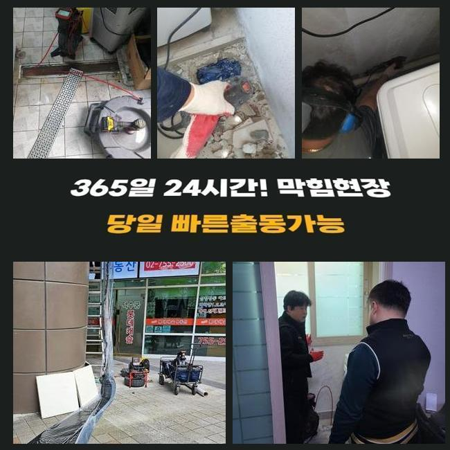
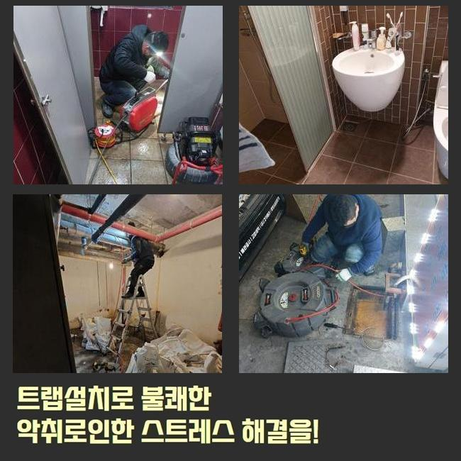
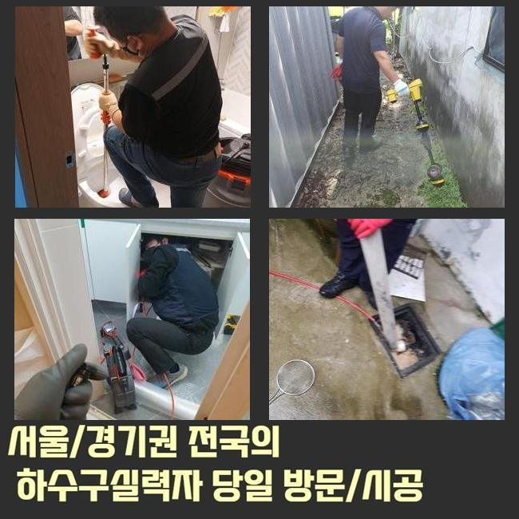
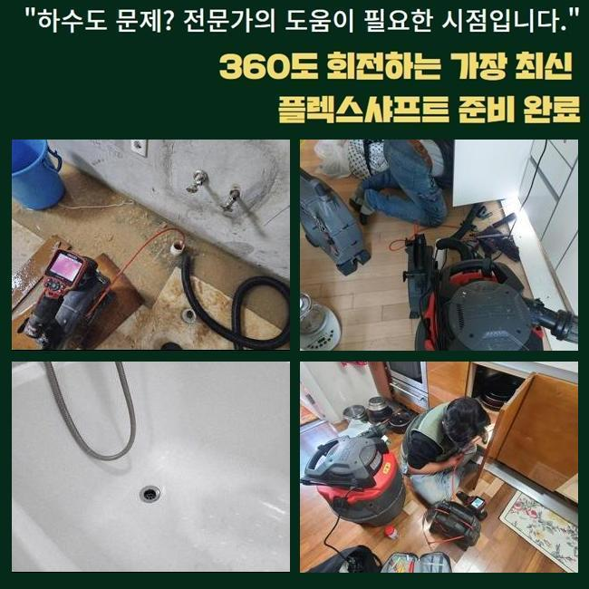

🏠 수원 정자1동세탁실역류 정자2동 하수구뚫는비용 통수전문
수원 싱크대막힘 전문 시공 후기

📋 작업 개요
- 위치: 수원
- 서비스 유형: 싱크대막힘, 하수구막힘, 배관막힘, 역류해결, 뚫는업체, 배관청소, 고압세척
- 작업 일시: 2025. 2. 15. 4:17
- 업체명: 하수구수사대 (010-5615-2118)
🔍 문제 상황
수원 정자1동세탁실역류 정자2동 하수구뚫는비용 통수전문
금일에는 오피스의 개수대에서 생겨난 배수정체를 해결해드린 예시를 소개할 예정이에요
간단하며 효용성있는 정보들이 상당하니 주목해주세요!
사무실이란 스팟에서 시작된 일이다 보니 나름의 개선책으로 해결하려는 시도도 보였는데요
전문가들은 대응방법들을 어떤 과정으로 실시하는지 또한 배수관을 지켜내는 방안들도 쉽게 안내할게요
고객분은 근무 중에 요리등을 하는 장소가 아니였기에 물이 안내려가는 불상사가 나타날줄은 꿈에도 몰랐다고 말씀하셨습니다
사무공간은 식자재들을 쓰지 않는 장소라서 정기적인 청소들이 결여된 사례가 대다수에요
저희업체는 곧장 달려가보았습니다 도착하고서 배수되는 모습을 확인했는데요
이곳저곳 확인하니 역류하고있던 문제는 없었지만 아주 조금씩 내려가는 광경이 눈에 들어왔어요
이럴땐 예고없이 거꾸로 흘러 역류되는 피해들이 나타날 가능성이 높습니다

🔎 원인 분석
💡 전문가 진단: 정밀 진단 장비를 사용하여 슬러지의 고착 여부를 판명하고 타격/세척 작업을 실시했습니다.
일단은 석션기계로 일컫는 장비를 운용하여 잔존하는 오수들을 흡입시켰어요
석션도구는 점검을 해주기 이전에 수월한 관찰을 위하여 운용하기도 하며 부유하는 잔재들을 청소해줄때 실질적인 성능을 보입니다
썩션통에 잔해들이 빠져나왔으나 그럼에도 답답하게 흘렀죠
석션기기의 가용 이후엔 내시경기기로 깊은 지점까지 확인했습니다
내시경케이블을 투입시키니 슬러지들이 잔존하여 배관구경이 협소하게 되었는데요
요리를 하지못하는 장소인데 어떤이유로 찌꺼기들이 축적되었나 생각할 수 있지만 다중 이용 시설은 철저히 세척들이 진행되지 못해서인데요
그리하여 간식이나 커피의 잔여물질 혹은 기름이 흡착되어 슬러지들을 만듭니다
내시경기기로 배수관을 관찰하며 샤프트장치로 뭉친 고착물을 타겟으로 해 조금씩 배수관을 청소하니 공간이 생기며 배수영역이 넓어졌어요
기름들은 관찰 시에 붉게 띄게되므로 청소가 이뤄지면 화면상으로도 환골탈태되는 광경을 관찰할 수 있습니다
샤프트운용을 실시했으나 물이 아직도 느린속도로 내려가는 상태로 파악했습니다
그리하여 많은 수도를 배수라인으로 흘려보내니 특정 구간에서 고여서 막히게되는 결함이 잔존해있는 상태였습니다

🔧 작업 과정
물들이 흐름이 원천중단되었단건 놓치게된 요소들이 분명하다는 것을 의미합니다
슬러지말고도 여타 트리거들이 남아있단 걸 보여주는것이기에 집수시설까지 체크할 필요들이 있었는데요
저희전문진은 만성적인 문제들의 연유를 찾을 목적으로 내시경케이블을 엘보라인까지 투입해주었어요
마침내 발견하게 된 건 배수라인의 모서리가 하단에 매립되어 있지 못하고 외측으로 노출되서 자리했다라는 사실이였습니다
실내부터 내시경장치로 확인해주는게 쉽지않아 자리를 옮겨 반대로 투입시킬 수 있게 구멍을 뚫어주고 그 위치에 내시경 내시경기기의 줄을 삽입했죠
내시경케이블을 투입하니 이물들로 문제들을 발견했죠
사무공간에서는 관로들이 연결되질 못했으며 바로 밑의 하수관과 함께 바깥으로 빠지는 구조였죠
해당 지점을 넘어가니 세면대배수관에 큰 이물이 배수관을 좁히게했던 실정이었습니다
주방쪽의 관로가 아닌 예상못한 지점에 사이즈가 컸던 오염물이 존재하여 인지하기까지 애를 먹었지만 결국 지속적인 막히는 문제의 주된 이유를 찾아냈는데요
몇번에걸쳐 지점들을 체크하고 점검해야하는 지점의 라인을 타공하여 잔해를 배출해주었는데요
이물의 경우 모서리가 둥글었던 고무재질이였는데 어째서 빠지게된건지 파악이 안됐지만 크기까지 상당한 수준이였고 배수관에 박혀있으면 통수되는것이 불가할 수 밖에 없는 이물질이였습니다
씽크대라인의 하수관과 정체들을 불러일으키는 잔재들을 청소해주는 과정들을 완료하니 유수가 제 모습을 되찾았고 바로잡는 단계가 끝났어요
최종적으로 고객님은 악취문제도 문의하셨어요 작업 중에 알 수 있었는데 악취들도 피어오르는걸 확인하게되었어요
트랩부분에 결함이 발견되었어요 해당 장소에서 마무리를 하고서 새것으로 교체도 여지없이 해드렸습니다
마지막 체크를 위해서 탕비실쪽으로 가 씽크대에 수도를 틀어 잘 내려가는지 보았더니 언제 그랬냐는 듯 이상없이 흘러갔어요
오늘의 배수구막힘의 증상도 이상없이 해결됐죠


✅ 작업 완료
다행스럽게도 끝끝내 문제의 까닭들을 쫓아 결국 막힌 까닭을 발견했으며 수도 사용에 있어서도 한결 나아졌죠
위같이 고객이 장기적으로 고생하시지않게 모든 과정을 마치게되었어요
이용하는 시점에 배수구로 기름성분과 음식물들이 빠지지않도록 유의해주셔야하고 청소과정도 때에 맞춰 해주면 좋겠죠?
저희전문진은 재발걱정을 하지않을 수 있는 작업계획에 집중합니다 이에 작업 중에 다녀간 다음에 수리한 부분에서 재발한다면 다시 찾아뵈어 as들도 제공해드려요
통수가 안되는 사태가 벌어져 전문진의 출장을 고심하고 있다면 저희의 전문가들에게 연락하시는건 어떠세요?



⚠️ 주방 싱크대 배관 막힘 예방 수칙
- ✅ 기름기가 묻은 식기나 프라이팬은 설거지 전 키친타올로 반드시 기름때를 닦아내세요.
- ✅ 주기적으로 싱크대 개수대에 뜨거운 물을 가득 받아 한 번에 내려 배관 내부 기름을 씻어내세요.
- ✅ 배수구 거름망을 미세한 필터로 사용하시고 음식물 찌꺼기가 틈으로 새어 들지 않게 관리하세요.
- ✅ 베이킹소다와 식초를 뜨거운 물과 함께 일주일에 한 번씩 부어주면 배관 살균과 막힘 예방에 좋습니다.
💡 핵심 정리
- 확실한 장비 작업(내시경 점검 및 샤프트 스케일링)으로 원인을 뿌리 뽑습니다.
- 작업 후 1년 이내에 동일한 부위 재발 시 100% 무상 A/S 서비스를 보장합니다.
- 서울 · 경기 · 인천 전 지역에 24시간 언제든 긴급 출동할 수 있도록 항시 대기 중입니다.
❓ 자주 묻는 질문 (FAQ)
🚨 수원 싱크대막힘 문제로 고민이신가요?
정확한 원인 진단과 확실한 시공으로 재발 없는 해결을 약속드립니다.
24시간 긴급 출동 | 서울 · 경기 · 인천 전지역 | 1년 내 재발 시 무상 A/S